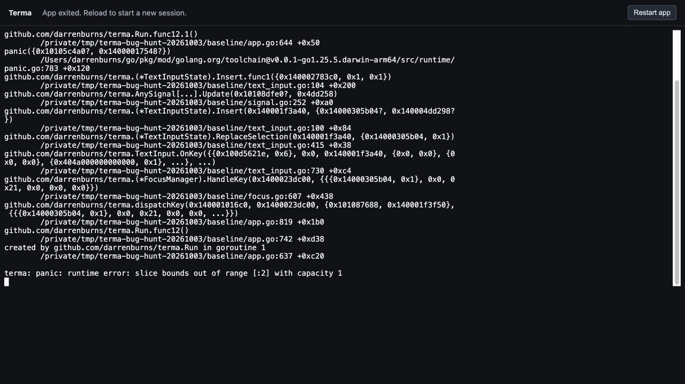

A bounded parallel investigation of collection navigation, text editing, and rendering. Each of the five original defects has a failing baseline reproduction, a regression test, and browser evidence. Further review corrections have dedicated regression tests.
5confirmed defects
3independent investigations
1delivery branch
100 × 30terminal cells for comparison captures
01 / Autocomplete
Unicode completion could crash the next keystroke
Accepting e + a combining accent put the cursor at 2 in a one-grapheme buffer. A joined emoji similarly produced index 3. Typing ! then terminated the app with a slice-bounds panic.
Original code · detail, click for full screenshotFixed code · detail, click for full screenshot
See the original app crash

Why it happened
Autocomplete sliced text and counted cursor positions as Unicode runes. TextInput and TextArea store grapheme positions, so joined emoji and combining marks broke the index contract.
What changed
Use grapheme positions throughout the built-in insertion strategies and query extraction. Reuse the child editor boundary when reading its cursor.
How it was checked
Accept the accented e suggestion, then type !. The editor stays connected and displays é!. Tests also cover all four strategies, combining marks, and trigger queries after an emoji.
Reproduce this bug
From the repository root, run the command below and open the printed URL with its token. Add ?cols=100&rows=30 before the token fragment to match these captures.
go run ./cmd/terma-browser -- go run ./docs/bug-hunt/repro/editing unicode
Regression test · TestAutocomplete_UnicodeSuggestionRemainsEditable Implementation · autocomplete.go
02 / Text editing
Enter kept the text it was meant to replace
With world selected in hello world, Enter produced hello world\n instead of hello \n.
Autocomplete inserted a newline directly through TextAreaState. That skipped the TextArea widget’s selection replacement behavior.
What changed
Route Enter through the existing TextArea.insertNewline method after the existing editability check.
How it was checked
Press Enter with world selected. The result is hello \n, cursor index 7, no active selection, and a change callback with the new text.
Reproduce this bug
From the repository root, run the command below and open the printed URL with its token. Add ?cols=100&rows=30 before the token fragment to match these captures.
go run ./cmd/terma-browser -- go run ./docs/bug-hunt/repro/editing selection
Regression test · TestAutocomplete_TextAreaEnterReplacesSelection Implementation · autocomplete.go
03 / List filtering
A changed filter could keep the wrong rows
Changing case sensitivity left Apple visible for lowercase a. Replacing items could show pear for the query app.
The filter cache checked the query and index bounds but omitted filter options and the item signal’s mutation revision.
What changed
Key cached membership by query, FilterOptions, and item revision. Read the item value and revision together through the existing signal API.
How it was checked
Press x in the case fixture. Only apricot remains. Regression tests also switch matching mode and replace or update items in place.
Reproduce this bug
From the repository root, run the command below and open the printed URL with its token. Add ?cols=100&rows=30 before the token fragment to match these captures.
go run ./cmd/terma-browser -- go run ./docs/bug-hunt/repro/collections case
Regression test · TestListFilterRefreshesWhenInputsChange Implementation · list.go
04 / List navigation
Filtering could make the list cursor disappear
Filtering apple out of a list left banana and blueberry without a cursor marker, although Enter still acted on the first visible row.
Default rows compared their source index with the stored cursor. Custom rows already projected the cursor onto the filtered view.
What changed
Use the existing renderedCursor projection for default row prefixes, styles, and paint subscriptions. Keep stored state unchanged during rendering.
How it was checked
Press x in the cursor fixture. Banana gets the > marker. Arrow navigation, Enter activation, and range selection stay aligned with visible rows.
Reproduce this bug
From the repository root, run the command below and open the printed URL with its token. Add ?cols=100&rows=30 before the token fragment to match these captures.
go run ./cmd/terma-browser -- go run ./docs/bug-hunt/repro/collections cursor
Regression test · TestDefaultListCursorProjectsOntoFilteredView Implementation · list.go
05 / Rendering and layout
Visibility wrappers lost content and layout space
VisibleWhen(true, child) painted no child. Hidden content also collapsed to zero size, so surrounding content moved into its space.
The wrapper used the old layout interface and a no-op paint method. The current render paths did not see its child.
What changed
Return a visible child directly so its overflow and floating behavior stay intact. Use passThrough layout for hidden children and suppress their painting, focus, hit targets, and floats.
How it was checked
The visible panel and button render. Press v to hide it. The footer stays on its row, and the hidden button cannot activate. Show it again and interaction returns. Tests compare incremental frames with forced full renders, including hidden child growth.
Reproduce this bug
From the repository root, run the command below and open the printed URL with its token. Add ?cols=100&rows=30 before the token fragment to match these captures.
go run ./cmd/terma-browser -- go run ./docs/bug-hunt/repro/visibility
Baseline 2871302c7d54ad7633a86c5925f00049e1ccc921. Delivery branch codex/terma-bug-hunt. The history places each failing reproduction before its repair.
The original full test suite passes. The new behavioral regressions fail on the original code for the reported reasons.
The final full test suite, race suite, build, and go vet pass. A fresh independent code review found no actionable production bugs.
Browser checks use real Go apps through terma-browser and xterm.js. Screenshots show actual terminal output.
New snapshot goldens cover the intended behavior. Existing golden images remain unchanged.
go test ./...
go test -race ./...
go build ./...
go vet ./...
This was a bounded hunt, not an exhaustive audit. Collection fixes cover filter options and item revisions. Changes to custom matcher closure inputs were not investigated. Hidden child growth was verified when the child reads reactive state during Build. Initially hidden paint-only text subscriptions were not changed or claimed as covered.
The initial sandbox blocked localhost test listeners. The same baseline suite passed when local networking was allowed. This is recorded as an environment restriction, not a Terma failure.